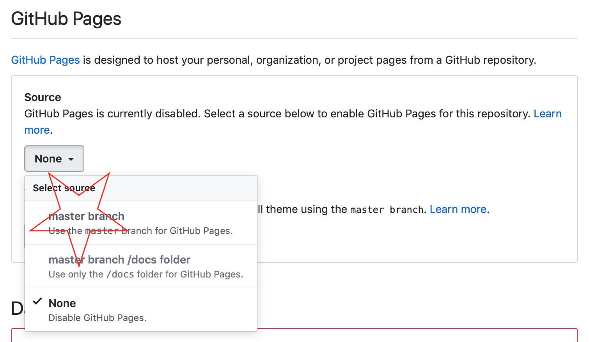
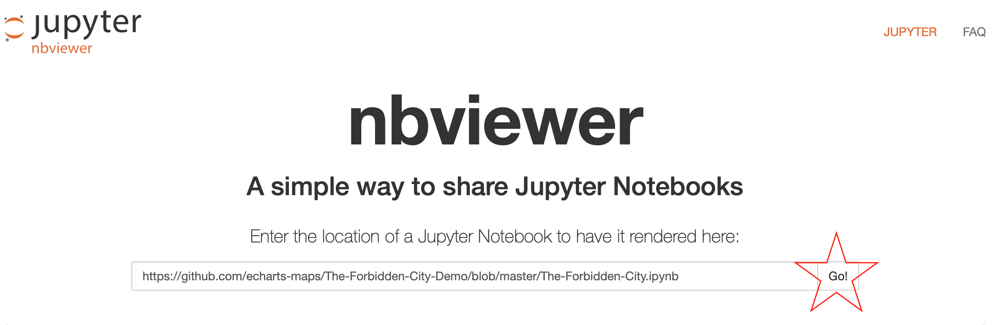

Sharing it
So we have integrated it with pyecharts and jupyter notebook. When we sharing it, we cannot use localhost/127.0.0.1. The solution is to find a static file host.
Host the js file on github
This is by default how all js assets of echarts-maps are hosted. It is very handy for me.
-
Initialize the repo locally.
$ git init$ git add .$ git commit -am "initial comment" -
Create a project on github and push your local repo up there.
-
Open the
settingpage of your project
-
Then scroll down and set up github pages.

-
Please wait for github pages to be available.
Update registry.json
Since we have now published the js file, registry.json needs to be updated as:
{ "GITHUB_URL": "https://echarts-maps.github.io/The-Forbidden-City-Demo", "JS_FOLDER": "/", "PINYIN_MAP": { "The Forbidden City": "The-Forbidden-City" }, "FILE_MAP": { "The-Forbidden-City": "The-Forbidden-City" } }
And your python file can then use the github site url in rendering:
from pyecharts import options as opts from pyecharts.charts import Geo from pyecharts.datasets import register_url register_url("https://echarts-maps.github.io/The-Forbidden-City-Demo") g = ( Geo() .add_schema(maptype="The Forbidden City") .set_global_opts( title_opts=opts.TitleOpts(title="The Forbidden City in Beijing"), ) ) g.render()
Now you can share your script
- You can host
render.htmlin your github repo, like this: https://echarts-maps.github.io/The-Forbidden-City-Demo/render.html -
And share jupyter-notebook via https://nbviewer.jupyter.org. Here is the example link.

-
Here is what it can be seen by your audience:

Please note that it will take some time for the online jupyter notebook viewer to show properly. For my example, it took 24 hours.
Other ways to host it publicly
There are many viable solutions:
- Publish your js file as npm package and use unpkg.com as content delivery server for you.
- Save it in AWS S3 and make it suing AWS cloud-front
- Publish your project to google firebase platform.